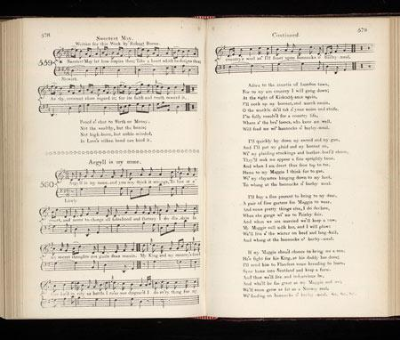

Argyle is my Name
John Campbell, Duke of Argyll (1694 - 1743)
Scots Musical Museum Volume VI N° 560 pages 578/579 (1803)
Tune
(Scottish Jig)
Other titles: "Cakes of Crowdy", "Bonox of beare meal", "The Fisherman's Frolic"
First published in Margaret Sinkler's manuscript of 1710.
Related Tune:
Kinnegad Slashers (Double Jig)
First published in O'Farrell's Pocket Companion 1805
Sequenced by Chr.Souchon
Related songs:
"Bannocks O' Bear Meal"
"Cakes o' Croudy"


|
1. Argyle is my name, and you may think it strange,
To live at a Court, yet never to change: To faction, or tyranny, equally foe; The good of the land's the sole motive I know. The foes of my country and King I have faced; In city or battle I ne'er was disgraced: I've done what I could for my country's weal; Now I'll feast upon bannock o' barley-meal. 2. Ye riots and revels of London, adieu! And Folly, ye foplings, I leave her to you! For Scotland I mingled in bustle and strife- For myself I seek peace and an innocent life: I'll haste to the Highlands, and visit each scene With Maggie, my love, in her rocklay o' green; On the banks o' Glenaray what pleasure I'll feel, While she shares my bannocks o' barley-meal! 3. And if chance Maggie should bring me a son, He shall fight for his King as his father has done; I'll hang up my sword with an old soldier's pride- Oh, may he be worthy to wear't on his side! I pant for the breeze of my loved native place, I long for the smile of each welcoming face- I'll aff to the Highlands as fast's I can reel, And feast upon bannocks o' barley-meal. |
1. Je m'appelle Argyll et l'on peut s'étonner,
Que, vivant à la Cour, je n'ai point changé: Je hais les tyrans et je hais les factions; Le bien de mon pays, voilà ma passion. J'ai bravé ses ennemis, ceux de mon roi, Brillant dans la paix et la guerre à la fois: J'ai fait de mon mieux pour servir mon pays, Méritant le gâteau d'orge que voici. 2. Emeutes et fêtes de Londres, adieu! Je laisse aux dandys tous ces plaisirs oiseux! Pour l'Ecosse j'ai plongé dans la mêlée, Mais n'ai jamais rêvé pour moi que de paix: Les lieux charmants des Highlands je les parcours. Ma chère Maggie met ses plus beaux atours; Sur les rives du Glenaray quel régal, De goûter avec elle au repas frugal! 3. Et si par bonheur Maggie me donne un fils, Il fera pour le roi ce que moi je fis; En fier soldat lui donnerai mon épée- Puisse-t-il être digne de la porter! Avide de respirer l'air du pays, De retrouver tant de visages amis, Vers les Highlands je me suis précipité: Vite un gâteau d'orge: je l'ai mérité! Trad. Christian Souchon (c) 2004 |
|
This is another text in relation with Jacobitism matching
"Bannocks O' Bear Meal"
or similar tunes.
It was contributed by Sir Alexander Boswell to the third volume of George Thomson's "Collection of Scottish Airs", on which Burns collaborated in addition to the "Musical Museum" as from September 1792. Alexander Boswell was the oldest son of James Boswell, the famous biographer of the not less famous poet, critic, essayist and lexicographer, Dr Samuel Johnson 1709-1774). It is not wholly original, but an improved version of former words to the same air. The original is attributed to John Campbell, Duke of Argyle , who died on 4th October 1743. However, the song may be older: if the name of Maggie is correct, it would refer to the first Marquis of Argyll, whose wife was Lady Margaret Douglas. He was "so very notorious a coward that this song could have been made by nobody but himself, unless to turn him into ridicule."(Note to The Scots Musical Museum). A song on another (or is it the same?) Argyle of the eighteenth century with the title "Kist the Streen" is to be found in "Songs from Herd's MS" edited by Hans Hecht (1909), under N°34, page 138. The same collection includes a rhyme of the seventeenth century (N°92, page 207) with a similar burden:— 'Mass David Williamson, Saw ye e'er, heard ye e'er -Chosen of twenty, Siccan a soudie? Gaed up to the pulpit Bannocks o' bear meal, And sang Killiecrankie. Cakes o' crowdiel' Source: "Complete songs of Robert Burns Online Book" (cf. Links) |
Voici d'autres paroles pour le chant
"Bannocks O' Bear Meal"
ou d'autres qui lui ressemblent, liées, elles aussi, au Jacobitisme.
Elles furent envoyées par Sir Alexander Boswell pour être publiées dans le troisième volume de la "Collection d'Airs Ecossais" de Thomson à laquelle Burns contribua, outre le "Musée Musical" à partir de septembre 1792. Alexandre Boswell était le fils aîné de James Boswell, le célèbre biographe du non moins fameux poète, critique, essayiste et lexicographe, Dr Samuel Johnson (1709 -1774). Elles ne sont pas complètement originales, mais une version améliorée de l'original. L'original, quant à lui, est attribué à John Campbell, Duc d'Argyll , qui mourut le 4 Octobre 1743. Cependant, ce texte pourrait être plus ancien: si le diminutif "Maggie" est exact, il s'agirait du premier Marquis d'Argyle, dont l'épouse était Lady Margaret Douglas. "C'était un poltron d'une telle notoriété que ce chant n'a pu être composé que par lui-même, à moins qu'on ne l'ai écrit pour le tourner en ridicule." (Note pour le "Scots Musical Museum"). Un chant sur un autre (ou sur le même?) Argyll du 18ème siècle et intitulé "Kist the Streen" se trouve dans les "Manuscrits de Chants" de Herd, édités en 1909 par Hans Hecht, sous le n°34, page 138. Et dans ce manuscrit on trouve ces vers du 17ème siècle avec le même "bourdon" (n°92, page 207): Le Pasteur Williamson: On chercherait en vain - Il est seul parmi vingt -, Un tel énergumène! Il est monté en chaire Gâteaux de gruau, Chanter Killiecrankie. Ecuelles de bouillie!' Source: "Complete songs of Robert Burns Online Book" (cf. Links) |